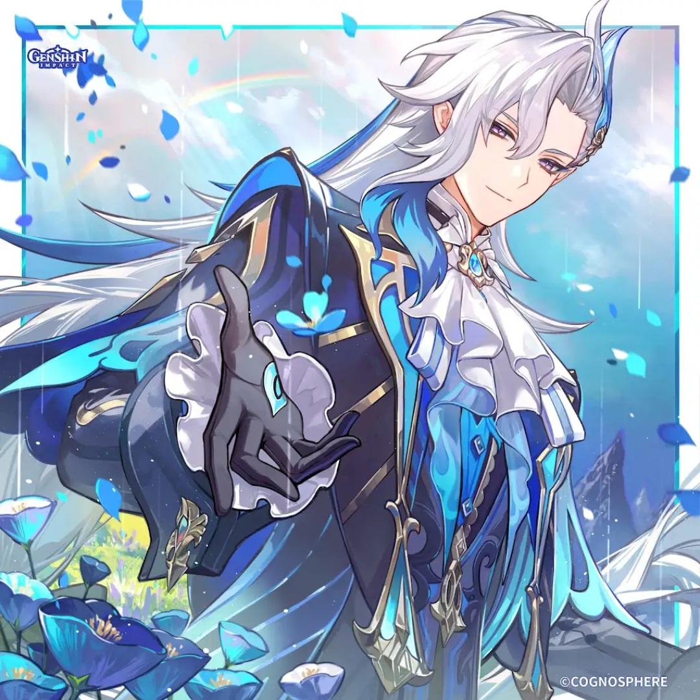

SANDS
HP%
GOBLET
HP% / Hydro DMG%
CIRCLET
CRIT DMG / HP%

Neuvillette stands as a premier sustained on-field Hydro hypercarry powered entirely by Max HP scaling and his signature Charged Attack beam, Equitable Judgment. By harvesting Sourcewater Droplets spawned from his Elemental Skill and Burst, Neuvillette bypasses charging windups to deliver massive, mobile 360-degree piercing Hydro AoE while continuously self-healing. Though modern endgame DPS checks increasingly favor frontloaded burst windows and dedicated Nod-Krai elemental reactions (such as Lunar-Bloom and Lunar-Charged), Neuvillette remains unmatched in rotational consistency, self-sufficiency, and general ease of execution.
Normal Attack (As Water Finds a Whispering Level) directly dictates the scaling of Equitable Judgment and represents ~85% of his damage. Elemental Burst (O Tides, I Have Returned) is leveled second to maximize damage while generating 6 Droplets, followed by his Elemental Skill for 3 instant Droplets.
| Stat Metric | Target Threshold | Justification |
|---|---|---|
| Max HP | 38,000 ~ 42,000+ | Primary scaling foundation for all beam ticks, Droplet self-healing, and Pneuma thorn strikes. |
| CRIT Rate | 50% ~ 64% | Reaches 86%–100% in-combat via 4pc Marechaussee Hunter (+36% bonus from continuous HP drains). |
| CRIT DMG | 220% ~ 260%+ | Primary damage multiplier stacked across Circlet, signature catalyst, and artifact substats. |
| Energy Recharge | 120% ~ 130% | Guarantees off-cooldown Burst availability (70 Energy cost) to spawn 6 Droplets per rotation. |
| Hydro DMG / HP% | Hydro% or HP% Goblet | HP% Goblet is optimal when paired with Furina or Tome of the Eternal Flow due to saturated DMG% buffs. |


Substat Priority: Energy Recharge (to 120%) > CRIT DMG > CRIT Rate > HP% > Flat HP
 Neuvillette
Main Carry
Neuvillette
Main Carry
 Furina
Fanfare / Sub-DPS
Furina
Fanfare / Sub-DPS
 Kazuha
Kazuha
 Sucrose
Sucrose
 Xilonen
Xilonen
 Zhongli
Zhongli
Furina maxes Fanfare instantly via Neuvillette's HP fluctuations, while Kazuha and Xilonen stack massive Hydro RES shred and Cinder City buffs.
Neuvillette
Main Carry
 Columbina
Lunar Moonsign
Columbina
Lunar Moonsign
 Ineffa
Electro Sustain
Xilonen
Kazuha
Ineffa
Electro Sustain
Xilonen
Kazuha
Adapts Neuvillette into Nod-Krai mechanics, utilizing Columbina and Ineffa to trigger critical-striking Lunar-Charged reactions alongside Hydro beams.
Neuvillette
Main Carry
 Fischl
Fischl
 Ororon
Ororon
 Nahida
Nahida
 Dendro MC
Dendro MC
 Kuki Shinobu
Kuki Shinobu
 Layla
Layla
Utilizes high Hydro application to produce continuous Dendro cores for Hyperbloom while Neuvillette maintains distance with self-sustain.
| Tier | Name | Rating | Combat Mechanics & Pull Value |
|---|---|---|---|
| C1 | Venerable Institution | ★★★ (TOP VALUE) | Immediately grants 1 stack of Past Draconic Glories on field entry; provides complete interruption resistance during Equitable Judgment, removing the need for shielders. |
| C2 | Juridical Exhortation | ★★☆ | Each stack of Past Draconic Glories increases Equitable Judgment's CRIT DMG by 14% (up to +42% CRIT DMG max). |
| C3 | Ancient Postulation | ★★☆ | Increases Normal Attack (As Water Finds a Whispering Level) Level by 3, directly amplifying core beam motion values. |
| C4 | Crown of Compassion | ★☆☆ | When Neuvillette is healed on-field, creates 1 Sourcewater Droplet (CD: 4s), improving rotation fluidity and droplet availability. |
| C5 | Axiomatic Verdict | ★☆☆ | Increases Elemental Burst (O Tides, I Have Returned) Level by 3. |
| C6 | Wrathful Retribution | ★★★★★ (WHALE NUKER) | Absorbing droplets during Equitable Judgment extends beam duration by +1s each. Hits unleash 2 extra torrents every 2s, each dealing 10% Max HP as Hydro DMG. |
Neuvillette remains the gold standard for reliable, high-floor sustained Hydro destruction. While evolving endgame metas emphasize frontloaded reaction bursts, Neuvillette's sweeping AoE coverage, self-healing independence, unmatched exploration hover utility, and colossal C1 value make him one of the most accessible and dependable carries in Genshin Impact history.